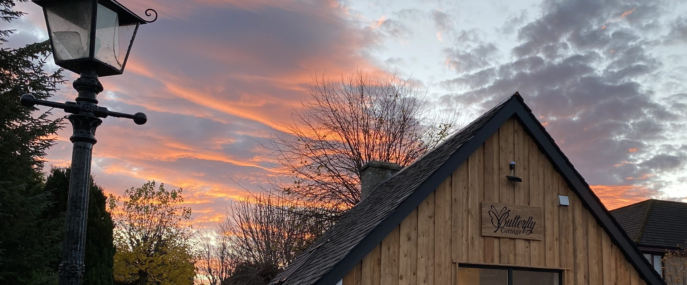
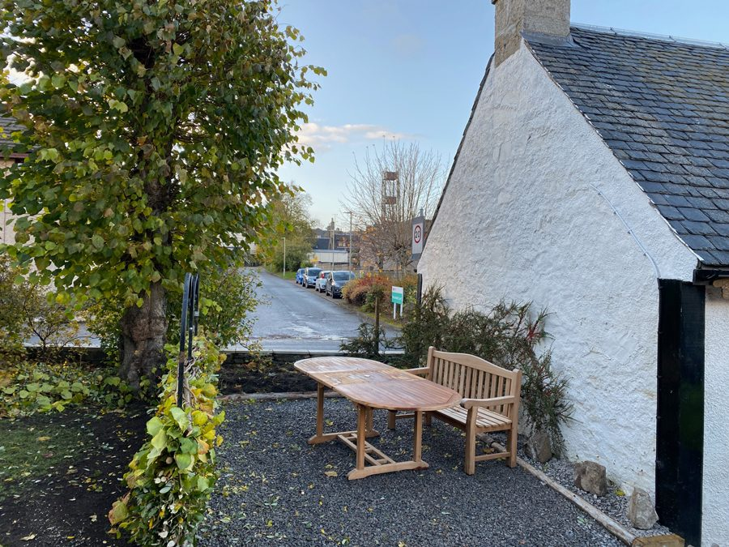
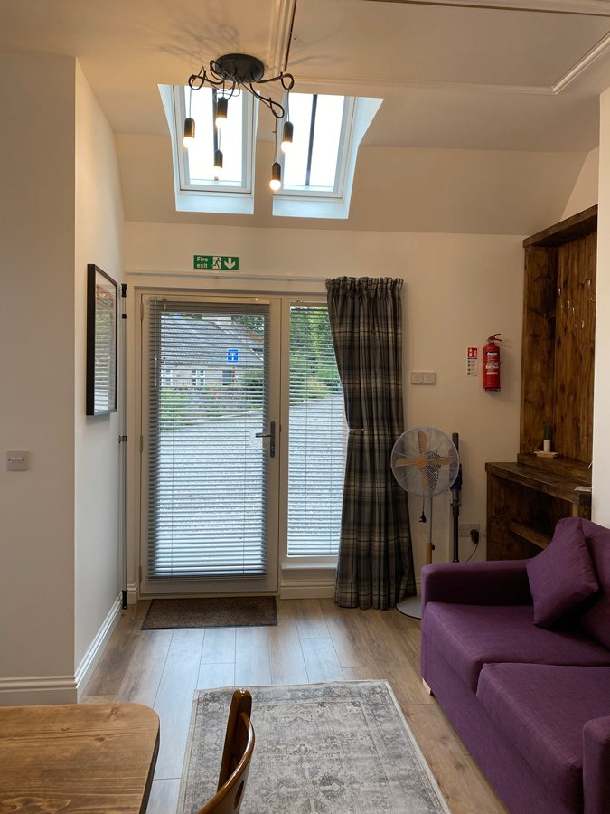
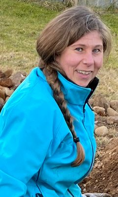
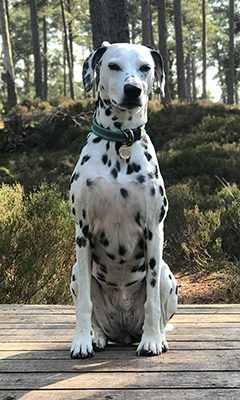

Grantown-on-Spey · Parco Nazionale dei Cairngorms
Un cottage per due nel cuore dei Cairngorms
Una vacanza in un annesso dell'Ottocento ristrutturato. Una camera da letto, un patio privato, e Anagach Woods, il fiume Spey e la High Street a pochi minuti a piedi.

Autunno in Woodside Avenue
- Posti letto2 + 2 bambini
- Camera1 matrimoniale
- Bagno1 privato
- Superficie32 m²
- CaniSu richiesta
- ParcheggioPrivato, ricarica
- ApertoTutto l'anno
Benvenuti
Qui ogni passeggiata ha la sua magia
Benvenuti nelle Highlands scozzesi. Nel bel mezzo si trova Grantown-on-Spey, una splendida cittadina sul fiume Spey.
La zona invita a lunghe passeggiate senza fretta lungo il fiume e tra le pinete. Ognuna ha la sua magia. Godetevela e passate la vostra vacanza da noi, in una casa piccola e accogliente pensata per due, con tutto quello che vi serve e niente che non vi serva.
Se invece preferite farvi coccolare e svegliarvi con la colazione pronta, la camera giusta è qui accanto, al Garden Park Guest House.


Un garage, una sala esercitazioni, una lavanderia
Costruito tra il 1754 e il 1868
Il cottage era il garage della prima casa di Woodside Avenue. Più tardi l'esercito territoriale lo usò come prima sala esercitazioni del paese, e per un periodo fu anche lavanderia. Oggi è elegante ma familiare, e sta tranquillo in un giardino ben curato di circa 2000 metri quadrati.
Il campo da golf di Grantown, il sentiero lungo lo Spey e le pinete di Anagach Woods sono tutti vicinissimi. Alla High Street, con i suoi negozi a conduzione familiare, ristoranti e pub, si arriva in un paio di minuti. Grantown fa parte del Parco Nazionale dei Cairngorms.
«Un vecchio garage ristrutturato a un livello altissimo, con impianto di riscaldamento moderno e un design pieno di idee.»
Ospite da Wymondham · aprile 2024Interni
Trentadue metri quadrati, pensati per bene
Una camera matrimoniale con doccia walk-in privata e uno spazio giorno open space con cucina, tavolo da pranzo e zona salotto. Spese di riscaldamento, elettricità, biancheria e asciugamani sono compresi nel prezzo.
Dormire
- Letto matrimoniale con struttura in legno
- Divano letto per un massimo di due bambini (max 10 anni)
- Biancheria e asciugamani compresi
- Biancheria o asciugamani in più su richiesta
- Finestre insonorizzate
Cucina
- Forno combinato e piano in vetroceramica
- Microonde e frigorifero con congelatore
- Lavastoviglie
- Bollitore, tostapane, macchina per il caffè
- Stoviglie, bicchieri e posate
- Tavolo da pranzo per due
Bagno
- Doccia walk-in nel bagno privato
- Lavabo e WC
- Accappatoi a disposizione
- Prodotti da bagno
- Asciugacapelli
Comfort
- Riscaldamento centralizzato, corrente compresa
- Smart TV con canali via cavo
- Wi-Fi gratuito in tutta la casa
- Ventilatore a piantana per le giornate calde
- In tutto il cottage non si fuma
- Pacchetto di benvenuto all'arrivo
Fuori
- Patio privato con tavolo e sedie
- Giardino di 12 per 4 metri, non recintato
- Ampio parcheggio privato
- Locale asciugatura in comune
- Colonnina Easee per auto elettriche, a pagamento
- Circa 2000 metri quadrati di giardino in comune
Galleria
Date un'occhiata
Toccate una foto per vederla più grande.
Un video tour del cottage
Tre minuti dalla porta d'ingresso al patio, così sapete esattamente cosa state prenotando. Il video si carica solo quando premete play.
Da sapere
Tutto quello che serve sapere prima
Nessuna sorpresa e nessuna clausola nascosta in fondo a un PDF. Se c'è qualcosa da chiarire, chiamateci o scriveteci.
- Arrivo
- Dalle 16 alle 19. Sarah o Daniel vi consegnano le chiavi al Garden Park Guest House, a 30 metri. Portate un documento d'identità o la conferma di prenotazione. Nel cottage vi aspetta il pacchetto di benvenuto, pronto per la prima colazione.
- Partenza
- Entro le 9.30.
- Soggiorno minimo
- Varia secondo le date, spesso tre notti. Il calendario di prenotazione mostra il minimo per le date scelte.
- Ospiti
- Due adulti e fino a due bambini (max 10 anni) sul divano letto.
- Cani
- Benvenuti su richiesta. La tariffa è di £39 a prenotazione e a settimana.
- Compreso
- Spese di riscaldamento, elettricità e acqua, biancheria e asciugamani.
- Cambio biancheria extra
- £30 per ogni cambio aggiuntivo di biancheria e asciugamani.
- Pulizia straordinaria
- £95, addebitati solo se il cottage richiede più di un normale riassetto.
- Pagamento
- Un acconto del 23 per cento dell’importo conferma la prenotazione, il saldo è dovuto 21 giorni prima dell’arrivo. Accettiamo bonifico bancario, Visa e Mastercard.
- Cancellazione
- Vi consigliamo vivamente un’assicurazione di viaggio. Per una cancellazione 28 giorni o più prima dell’arrivo viene addebitato l’8,6 per cento del soggiorno, per una cancellazione successiva il 68 per cento. Chi non si presenta o accorcia il soggiorno dopo l’arrivo paga l’intero importo. Il testo completo è nelle nostre condizioni di cancellazione.
- Fumo
- In tutto il cottage non si fuma e non si svapa. Vi preghiamo di non manomettere i rilevatori di fumo.
- Auto elettriche
- Colonnina Easee in loco, pagamento tramite l'app Tap Electric. La ricarica non è compresa nel prezzo.
- Lavanderia
- La lavanderia self service Wash.ME in Spey Avenue 39 è a due minuti a piedi ed è aperta 24 ore su 24.
- Certificazione
- Gold Standard di Green Tourism Ltd per il nostro impegno ambientale. Classe energetica D.
Domande frequenti
Dove posso comprare attrezzatura da trekking come scarponi o giacche impermeabili?
A Grantown-on-Spey consigliamo Mortimers. Trovate una vasta scelta di abbigliamento outdoor di qualità, scarponi e attrezzatura, e il personale sa di cosa parla. Mortimers serve escursionisti e pescatori dello Speyside da oltre 50 anni. Se badate al prezzo, Mountain Warehouse ad Aviemore è una buona alternativa con un ampio assortimento.
Perché Grantown-on-Spey è una buona base per esplorare le Highlands?
Grantown si trova al centro di più regioni. Da qui partite a raggiera verso lo Speyside, i Cairngorms, la costa del Moray, la zona di Inverness, lo Strathspey e l’Aberdeenshire. Molte mete distano dai 20 ai 50 minuti. Ogni giorno può offrire un paesaggio completamente diverso.
Quanto dista Inverness da Grantown-on-Spey?
Circa 52 minuti in auto, passando da Nairn oppure dalla A9. C’è anche il trasporto pubblico, tra Grantown-on-Spey e Inverness circolano autobus regolari.
Cosa non dovremmo perderci nella regione?
Se avete poco tempo consigliamo di unire Inverness, Loch Ness e lo Speyside. Avrete la capitale storica delle Highlands, il famoso paesaggio del Loch Ness e la regione del whisky più conosciuta al mondo, quindi cultura, natura e storia insieme.
Vale la pena andare a Nairn?
Senz’altro. Nairn ha una delle spiagge di sabbia più belle della zona, un bel lungomare e diversi caffè accoglienti. Nelle giornate limpide la vista sul Moray Firth è splendida e con un po’ di fortuna vedrete i delfini dalla riva.
Dov’è il miglior whisky di Scozia?
Chi lo sa. La verità è che nessuno può rispondere a questa domanda. La Scozia ha più di 140 distillerie e ognuno ha gusti diversi. Forse amate un whisky torbato delle isole, forse siete alle prime armi. In quel caso lo Speyside è uno dei posti migliori per cominciare. Fermatevi da noi e scoprite più di 50 distillerie tra Speyside e Strathspey.
Perché al Garden Park conta la qualità del cibo?
Daniel e Sarah sono convinti che una buona colazione dia il tono a tutta la giornata. Al Garden Park il succo è al cento per cento, le uova sono da allevamento all’aperto dove possibile e i prodotti vengono dalla zona. La qualità lì è una convinzione, non una casella da spuntare. Il Garden Park ha il Gold Award di Green Tourism.
C’è una colonnina per l’auto elettrica?
Sì. Il Garden Park Guest House ha una colonnina nel parcheggio. La attivate comodamente con l’app corrispondente. È in funzione dal 2022.
Si arriva a piedi a ristoranti e negozi?
Sì. Il Garden Park si trova in una via laterale tranquilla. Al centro sono circa due minuti a piedi. Ogni ristorante dista da uno a dieci minuti, diversi anche meno di quattro.
Ci sono opzioni vegane per la colazione?
Sì. Ogni giorno ci sono scelte vegetariane e vegane fresche.
Quanto dista il fiume Spey?
Circa sette o nove minuti a piedi. Il percorso attraversa i bellissimi Anagach Woods, dove vivono scoiattoli rossi, caprioli e molti uccelli di bosco.
Si riesce a fare lo Speyside Malt Whisky Trail in un giorno?
Riuscirci si riesce. La vera domanda è se il giorno dopo ve ne ricorderete. Con tante distillerie, centri visitatori e degustazioni il tempo vola. Il nostro consiglio è visitarne meno e godersele di più. Daniel su richiesta accompagna anche fino a quattro persone. Le date si riempiono in fretta, in alta stagione prenotate almeno sei settimane prima.
Si vedono davvero i delfini sulla costa del Moray?
Sì, davvero, e non hanno mai chiesto un biglietto. Il posto migliore è Chanonry Point vicino a Fortrose. Lì i tursiopi si fanno vedere spesso, soprattutto una o due ore dopo la bassa marea. Portate un binocolo e un po’ di pazienza, ne vale la pena.
Dove si richiede ufficialmente la ETA britannica?
Richiedete la ETA solo attraverso canali ufficiali, altrimenti pagate costi inutili o finite su siti truffaldini. Ci sono due strade. Direttamente sul sito del governo gov.uk/eta/apply oppure con l’app ufficiale UK ETA da App Store o Google Play, con cui scansionate il chip biometrico del passaporto e il vostro volto. È importante che l’indirizzo finisca esattamente in .gov.uk. Altri siti sembrano identici a quelli ufficiali e applicano forti sovrapprezzi. La domanda ufficiale costa £20.
Si può spillare il whisky dal rubinetto qui?
L’abbiamo chiesto, ma alle distillerie l’idea è sembrata un po’ troppo generosa. La buona notizia è che lo Speyside è praticamente dietro casa, con distillerie famose in tutto il mondo come Glenfiddich, Macallan e Aberlour. Una visita vale la pena anche per chi di solito non beve whisky.
Dove comincia davvero la natura selvaggia delle Highlands?
Più o meno dove il vostro telefono decide di aver lavorato abbastanza per oggi. Sul serio, da qui siete in fretta in alcuni dei paesaggi più belli delle Highlands. Intorno a Inverness, nel Parco Nazionale dei Cairngorms e sulla costa del Moray vi aspettano sentieri, punti panoramici e molta aria fresca.
Recensioni
Cosa dicono gli ospiti una volta tornati a casa
4,9 / 5
«Abbiamo passato una settimana meravigliosa al Butterfly Cottage. Già dopo la prenotazione abbiamo ricevuto un pacchetto fantastico …»
«Bello spazio piccolo, accogliente e compatto. Ben attrezzato e un letto comodissimo.»
«Padroni di casa di prim'ordine, molto accoglienti. Daniel e Sarah amano fare due chiacchiere, sono una risorsa per il paese.»
«Si arriva a piedi in centro, pub, bar, negozi e un ottimo ristorante indiano. Posto fantastico.»
La zona
Grantown-on-Spey e i Cairngorms
Grantown fu fondata nel Settecento ed è la capitale storica dello Strathspey. Come base per gite in giornata, whisky, natura e costa è difficile da battere. Da qui si esplorano comodamente Strathspey e Badenoch, Speyside, Morayshire, Nairnshire, Inverness e la costa del Moray Firth, tutto con percorsi a raggiera. Dal 2003 il paese si trova nel Parco Nazionale dei Cairngorms, che con 3.800 km² è il più grande del Regno Unito.
Camminate e fauna
Anagach Woods e lo Speyside Way iniziano a pochi minuti dalla porta, nessun altro alloggio è più vicino al percorso. Nella regione vivono cervi, lontre, delfini, aquile reali, falchi pescatori e martore, e il centro RSPB di Loch Garten è a poca distanza in auto.
Whisky
Sul Malt Whisky Trail si trovano otto distillerie e una bottaia ancora in attività, tra cui The Cairn, la distilleria di Grantown.
Golf
Otto campi a portata di mano, cioè Grantown, Carrbridge, Boat of Garten, Abernethy Golf Club, Newtonmore, Kingussie, Aviemore e Craggan. Per mazze e scarpe abbiamo un locale chiuso a chiave con possibilità di asciugatura.
Castelli e storia
Ballindalloch Castle, Cawdor Castle e il campo di battaglia di Culloden si raggiungono tutti in un'ora. Il Grantown Museum è dietro l'angolo.
Mangiare fuori
Pranzo e cena non li serviamo. Dal 2025 però prepariamo il nostro piccolo panino raffinato, il Brügel, un panino davvero rustico alla svizzera. Con ogni prenotazione ricevete un PDF con tutti i ristoranti e i caffè del paese. Che siate vegani o amiate carne e pesce, troverete il posto giusto.
Dove mangiare lo trovate sulla nostra mappa interattiva. Scegliete il filtro «Discover Grantown» e poi «Eat & Drink» oppure «Cafés & Takeaway».
Pesca e attività all'aperto
Pesca e caccia di selezione si organizzano durante il soggiorno con una guida locale. Equitazione, trekking con i pony, birdwatching, sci, snowboard e rafting sono tutti nelle vicinanze.
La nostra mappa interattiva delle Highlands
Mete scelte a mano con i tempi di percorrenza e idee già pronte per le gite in giornata, divise in sei categorie su tre mappe. Ci sono anche i preferiti personali di Sarah e Daniel.
Chi vi accoglie
Sarah, Daniel e Lucy
Abitiamo qui accanto, al Garden Park Guest House, quindi non siamo mai lontani. Il cottage però è tutto vostro. Parliamo inglese e tedesco, Daniel anche italiano.

Sarah
Vi accoglie all'arrivo e conosce ogni sentiero del bosco.
Daniel
Ha fatto le mappe, i panini e questo sito.

Lucy
Dalmata. Risponde in austriaco. Non ha niente contro gli altri cani.
Siamo Sarah e Daniel
Nel 2019, verso la fine dei trent’anni, abbiamo lasciato la Svizzera e rilevato il Garden Park Guest House, perché volevamo accogliere le persone.
Da allora abbiamo lavorato senza sosta per rinnovare il Garden Park e lungo la strada abbiamo costruito il Butterfly Cottage, la nostra casa vacanze.
Innumerevoli ore e molte soddisfazioni dopo, lavoriamo ancora senza sosta perché i nostri ospiti si sveglino con una vera colazione delle Highlands. Fatta in casa, fresca e preparata con amore. Dopo una notte di sonno tranquillo.
Speriamo di poter sorprendere i nostri ospiti con un’ospitalità speciale ancora per molti anni.
Amiamo quello che facciamo.
E ci piace davvero accogliere le persone.
Vogliamo che il Garden Park sia più di un letto per la notte. Vogliamo che sia un posto in cui avrete voglia di tornare.
E con Grantown-on-Spey come base, i Cairngorms, lo Speyside, il Moray e il nord-est della Scozia sono a portata di mano.
Venite per le Highlands.
Restate per l’esperienza.
Tornate perché vi è sembrato di essere a casa.
Negli ultimi sette anni i nostri ospiti ci hanno premiato con riconoscimenti che parlano proprio di quello che cerchiamo di offrire.
Il complimento più bello è stato forse il Booking.com Traveller Review Award 2026. 10 su 10.
Qui potete leggere cosa dicono i nostri ospiti.
Prenotazione
Guardate se le date che avete in mente sono libere
Prenotare direttamente da noi è il modo più conveniente. Nessuna commissione, e parlate con le persone che poi vi consegneranno le chiavi.
IndirizzoButterfly Cottage
Woodside Avenue
Grantown-on-Spey PH26 3JN
Scozia
Telefono+44 1479 873235
E-mailrelax@butterfly-cottage.co.uk
relax@garden-park.co.uk
Arrivano entrambi a noi, scegliete quello che preferite.
Come arrivareApri in Google Maps
Nel navigatore inserite PH26 3JL, vi porta al parcheggio.